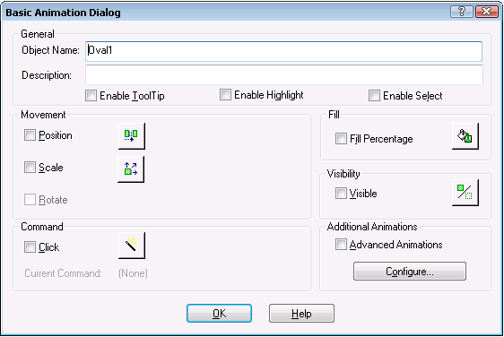

Animating object properties
Creating pictures in DeltaV Operate involves much more than just drawing a static object and linking it to a process database. With animation you can make your pictures perform in visually powerful ways and give operators the ability to acquire and interpret data in ways that can improve their understanding and performance.
Animations are themselves objects. When you animate the property of an object, animation objects are added to the object that contains that property. Although the result you see in DeltaV Operate is an object performing a visible, functional action, it is the object's properties that are animated, not the object itself.
There are a number of ways to add animation to objects. After selecting the object you can:
Right-click the object and select Animations to open an animations dialog box. This will be either a one-page Basic Animations Dialog or a multipage Animations dialog box.
Select a specific Animation Expert using the standard Animation toolbar buttons.
Open the Task Wizard and select the desired animation from the Animations task category.
After selecting the object and the type of animation to be applied, you specify the data source field that will be used to dynamically set property values and complete the related fields.
For a list of commonly used properties, refer to the table entitled Commonly Used Properties for Animations later in this topic.
Animation Dialog Boxes
When you right-click an object in a picture and select Animations from the context menu, an animations dialog box opens. The default version is the Animations dialog, shown below.
If you prefer the default dialog to be the Basic Animations Dialog , check the box Always Show Basic Animation Dialog on the Picture Preferences page of the User Preferences dialog (available under the Workspace menu). Then, when you right-click an object and select Animations, you will get the Basic Animation Dialog rather than the advanced dialog.

Using Experts to Animate Objects
An easy way to animate objects is to use experts. To access an expert, click the button on the Experts toolbar that corresponds to the task you want to perform. Some experts are only available using the Task Wizard. For example, if you want to animate the fill color of an oval, select the Fill Color Expert from the Animation category of the Task Wizard.
To learn more about the fields on the expert, click the Help button on the expert. For more information on DeltaV Operate Experts and the Task Wizard, refer to Using Animation, Command, and Picture Experts.
Understanding Data Sources
When you animate an object, the values of one or more of its properties change. Inherent to each property is the location where it received data. This location is called a data source. Typically, a data source identifies a process value or another object's property. However, a data source can be any of the following:
A DeltaV Operate tag.
The value of a picture or object property.
A global variable.
A predefined expression.
OPC servers.
In order to animate an object, you must connect to one of these data sources. In some cases, you can make a direct connection to a data source. In other instances, such as with Animation Experts, you connect an object to an animation object, and then connect the animation object to the data source.
Because animations change object properties, you can only use a property in an animation if the property accepts data. Read-only properties cannot be used. You can display the available properties by opening the Animations dialog box or the Properties window.
To specify a data source, you enter the appropriate syntax in the Data Source field of the Animations dialog box. Then, by specifying a conversion method for the data, you tell DeltaV Operate how you want to process the data so that you can achieve the desired effect. For more information on selecting data sources, and specifying syntax and conversion types, refer to Defining Data Sources.
When you are ready to animate an object, select the object and then select the appropriate expert from the Experts toolbar or the Task Wizard.
Alternately, you can open the Animations dialog box by double-clicking the object. (For some objects, such as OCXs, Alarm Summaries, Data links, and charts, you must right-click the object and select Animations from the pop-up menu.) Click the tab that contains the property you want to use. You can find a description of the dialog box tabs in Entering Property Values Manually in the topic Controlling Object Properties. The Animations dialog box is available for every object (and every property of that object) in DeltaV Operate. For a description of what each property does, refer to the Property Description in the Properties area.
The following table summarizes some of the more commonly-used animations.
|
Animating the property... |
On the tab... |
Lets you... |
|---|---|---|
|
HorizontalPosition |
Position |
Move an object horizontally across the screen. |
|
VerticalPosition |
Position |
Move an object vertically across the screen. |
|
HorizontalFillPercentage |
Fill |
Horizontally fill an object based on a percentage. For example, if the value of the property is 50, the object is filled 50%. |
|
VerticalFillPercentage |
Fill |
Vertically fill an object based on a percentage. For example, if the value of the property is 50, the object is filled 50%. |
|
HorizontalFillDirection |
Fill |
Horizontally fill an object from the left, right, or center. |
|
VerticalFillDirection |
Fill |
Vertically fill an object from the top, bottom, or center. |
|
RotationAngle |
Rotate |
Define the amount to rotate an object. Ovals, rounded rectangles, and charts do not have rotation properties. |
|
UniformScale |
Size |
Proportionally scale an object. |
|
Height |
Size |
Scale the height of an object. The width remains unchanged. |
|
Width |
Size |
Scale the width of an object. The height remains unchanged. |
|
HorizontalScalePercentage |
Size |
Horizontally scale an object based on a percentage. For example, if the value of the property is 50, the object is scaled 50%. |
|
VerticalScalePercentage |
Size |
Vertically scale an object based on a percentage. For example, if the value of the property is 50, the object is scaled 50%. |
|
ForegroundColor |
Color |
Change the foreground color of an object. Lines, polylines, and bitmaps do not have foreground color properties. |
|
BackgroundColor |
Color |
Change the background color of an object. Text objects will have background color only if the background style is set to opaque. |
|
EdgeColor |
Color |
Change the edge color of an object. Text objects do not have edge color properties. |
|
BackgroundStyle (text objects only) |
Style |
Make an object opaque or transparent. Using this property eliminates the need to put a box around text to highlight it. |
|
Visible |
Visibility |
Make an object visible or invisible. |
|
Caption (text objects only) |
Text |
Change the text displayed by a text object. |
Animating a Size Property
Using the properties in the previous table, you can fill or rotate an object based on an analog input. You can also dynamically scale objects by animating the height and/or width of an object. When scaling objects in this manner, be careful of the data source you select. For example, if you animate a rectangle's height based on a variable's current value (data source is User.Variable1.CurrentValue), the object is resized in the configuration environment to match the variable's value. Since the WorkSpace is in the configuration environment, the value is set to zero and the rectangle is resized to look like a horizontal line. When you switch to the run-time environment, the variable receives new values based on the variable's configuration and the size of the rectangle changes. When you switch back to the configuration environment, the rectangle appears as a line again because the variable's value is reset to zero.
The same effect results using the Scale Expert and you select the current value of a variable as the data source.
Understanding Animation Objects
Animation objects come in three forms:
Linear (Range) - Accepts any input data from a process database, and returns a corresponding output value (Example: Animating the horizontal position of an oval).
Lookup (Table) - Accepts any input data from a process database and presents that value to each entry in a lookup table to determine whether that value is in a range. If that value matches the range, the Lookup object then returns the corresponding output value. If the value does not match the range, it moves to the next row in the table and returns that output value (Example: Blinking the color of a rectangle based on a toggle rate).
Format - Accepts any input data from a database and returns a string as an output value (Example: Creating a caption for a text object).
Object - If an object contains a property that provides the desired animation, you can connect to that property. This is because every object has the ability to perform permanent connections from one of its properties to another. Essentially, the animation object only transforms data from the property of one object to the property of another object.
The most common animation object is the Lookup object, which is used primarily to apply color. This application is further described in Animating Properties Using Color section. For more information on animation object properties, refer to the Automation Interfaces online help.
Most of your connections to data sources are through animation objects. However, you do not need an animation object to animate an object.
Animating a Grouped Object
In addition to animating individual objects, you can also animate grouped objects. Animating a grouped object is similar to animating any other object, except that the objects inside the group can have independent animations. To animate a grouped object, select the group and animate the properties you wish using the appropriate expert. The properties of the group are changed to reflect your entries.
To animate the member objects of a group, drill down to the object in the group that you want to animate and complete the necessary entries in the appropriate expert. If the group has an animated property, and one of its member objects has the same property animated in a different way, the most recent animation takes precedence. For example, if you animate the group's ForegroundColor property, and then in turn animate a nested object's ForegroundColor property, you will see the nested object's animation when you run the picture.
Modifying Animations
There may be times when you must change the animations you create. Modifying animated objects is similar to creating them. The main difference is that when you open the Animations dialog box, any properties that have been dynamically changed are indicated by an arrow on its corresponding tab, as the following figure shows.
Modifying a Fill Animation in the Animations Dialog Box
Deleting Animations
When you no longer need an animation, you can delete the animation or the object that contains the animation. Deleting animations removes the animation from the property to which it was assigned.
Deleting an animation permanently destroys your selections. Do not delete an animation unless you understand the effect it will have on your objects and pictures.